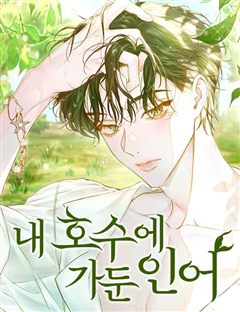
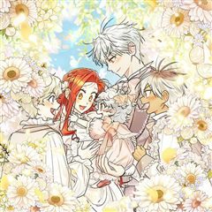
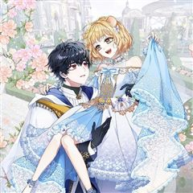
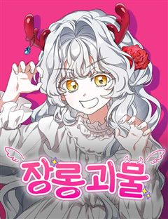
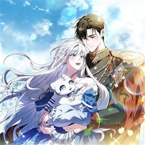
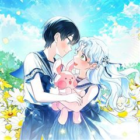
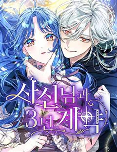
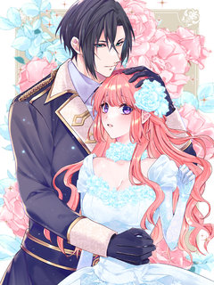

아기 다람쥐가 다 잘해요 같은 웹툰 추천

아기 다람쥐가 다 잘해요 · 혹등고래 / 한소영 / 군청주단
아기 다람쥐가 다 잘해요 재밌게 봤다면 이 웹툰들도 좋아할 거예요. 같은 장르이면서 인외존재, 로판 같은 요소가 겹치는 작품을, 겹치는 요소가 많은 순서로 20개 골랐어요.
2026-10-07 기준 · 네이버웹툰·카카오웹툰·레진코믹스 · 성인 작품 제외
내 취향으로 직접 골라 추천받기 →-
1
 카카오웹툰
카카오웹툰흑표 가문의 설표 아기님
잡종으로 태어나 외할아버지에게 학대당하다가 죽었다. 내가 가문의 이능을 발현하지 못한 쓸모없는 아이였기 때문에. 기억을 가진 채 과거로 돌아왔지만, 선택지는 과거와 그리 다르지 않았다. 이대로 살다가 전생과 똑같이 학대당해 죽거나, 나를 끔찍하게 싫…
인외존재로판로맨스카카오웹툰에서 보기 → · 흑표 가문의 설표 아기님 같은 웹툰 → -
2
 카카오웹툰
카카오웹툰여주인공이 나를 새언니로 점찍었다
빨간망토가 늑대를 잡아먹는 19금 피폐 여공남수 소설에 빙의했다. 문제는 그 늑대가 바로 내 남동생이란 사실! 동생과 깊은 숲속에 숨어 인간계로 도망갈 계획을 세우던 중, 눈밭에 쓰러진 여자아이를 발견했다. 아픈 아이를 지나칠 수 없어 지극정성으로…
인외존재로판로맨스카카오웹툰에서 보기 → · 여주인공이 나를 새언니로 점찍었다 같은 웹툰 → -
3
 카카오웹툰
카카오웹툰구미호를 잘못 키웠다
어느 날 요괴를 주웠다. 그것도 새끼 구미호를. 녀석의 거취가 고민이 되던 차 만난 동대륙의 신녀, 그녀는 내게 성체가 될 때까지 키운 뒤 고향으로 보내라고 한다. 새끼 여우를 키우라니… 저주받은 인간이 어떻게 어린 생명을 품고 치료한단 말인가. 낯…
인외존재로판로맨스카카오웹툰에서 보기 → · 구미호를 잘못 키웠다 같은 웹툰 → -
4
 네이버웹툰
네이버웹툰수인 보호소에서 남주를 입양해 버렸다
피폐삽질 소설의 시에나 로베트라는 악녀에 빙의했다. 돌연변이라는 이유로 표범 가문에서 버려져 수인 보호소에 온 남주를 괴롭히다, 뒤늦게 아들을 찾아온 공작에 의해 단명하는 역. 어떻게든 살아보겠다고 팔불출 아빠를 설득해서 공작이 오기 전까지 이반을…
인외존재로판로맨스네이버웹툰에서 보기 → -
5
 카카오웹툰
카카오웹툰악녀 언니를 구하러 온 용감한 강아지입니다
내 이름은 코코. 하얗고 복슬복슬한 털이 아주 멋진 강아지죠. “다음 생이 있다면 부디 언니 딸로 태어나 줘. 응?” 언니와 행복한 견생을 보내고, 무지개 다리를 건넜는데. '헉, 내가 죽은 후에 언니가 맨날 울기만 하잖아!' 안 돼! 우리 언니의…
인외존재로판로맨스카카오웹툰에서 보기 → -
6

네이버웹툰내 호수에 가둔 인어
“세르베인, 왜 날 만나러 오지 않았어?” 나와 닮은 증조할아버지의 조카를 부르는 사람, 아니 인어. 인어를 지독히 아낀 나의 조상은 그를 호수에 가두었다고 한다. 그동안 인어는 무슨 생각을 하며 죽은 지 백 년도 더 된 사람을 기다렸을까. 끔찍한…
인외존재로판로맨스네이버웹툰에서 보기 → -
7카카오웹툰
대공님의 애완 수인
황제의 유일한 동복 누이 대공 로잘린 이드리스 아펠루덴은 수인 노예를 선물받는다. 그녀는 수인에게 펜리르라는 이름을 붙여주고, 조금씩 그녀에게 마음을 열기 시작한 펜리르는 그녀를 인생의 단 하나뿐인 반려로 각인하게 된다.
인외존재로판로맨스카카오웹툰에서 보기 → -
8

카카오웹툰악역에 빙의했지만, 고양이나 키울래요
수인을 학대하다 처형당하는 악역, 르웨인에게 빙의했다. 죽음을 피하려 언니인 리니에의 정략결혼을 대신하기로 했다. 문제는 그 상대인 블루아 공작이 냉혹한 전장귀라 불리는 고양이 수인이라는 것인데....... “당신, 나 같은 수인을 학대하는 게 취미…
인외존재로판로맨스카카오웹툰에서 보기 → -
9

카카오웹툰신데렐라는 이 멧밭쥐가 데려갑니다
신데렐라는 왕자와 결혼했다. 그런데 설마, 영원한 사랑의 맹세가 고작 10년으로 끝날 줄은 몰랐다. 왕자가 어떤 영애에게 첫눈에 반해서 정부로 두다가 청혼까지 했기 때문이다. ‘망할 자식!’ 하지만 하루하루 메말라 가는 신데렐라에게 아무것도 해줄 수…
인외존재로판로맨스카카오웹툰에서 보기 → -
10

네이버웹툰남들 로판 여주 할 때 나는 장롱 괴물 됨
남들은 예쁜 사람, 귀여운 동물에 빙의할 때 나는 남주 방 장롱에 숨어 사는 음침한 괴물에 빙의했다. 그것도 모자라 남주를 괴롭히는 못된 괴물. 원작대로라면 불에 타 죽게 된다. 그런데― “네 뿔은 장미보다 더 아름다운 색이야.” “내가 네 이름을…
인외존재로판로맨스네이버웹툰에서 보기 → -
11

카카오웹툰백호 황녀님은 위험하지 않아요
수인들의 제국, 펜테린에는 한 가지 신탁이 내려온다. "백호가 태어나지 않으면 모두 멸망하리라." 이 신탁이 천 년 전 소멸한 어둠의 신수의 부활을 대비해 백호 신수의 힘이 필요함을 의미하는 것까진 알았는데, 시간이 지나도 황실에는 백호 수인이 태어…
인외존재로판로맨스카카오웹툰에서 보기 → -
12

카카오웹툰토끼라뇨, 누가 봐도 맹수인데
Q : 늑대랑 사자가 결혼해서 토끼를 낳을 수도 있나요? A : 헛소리 말고 발 닦고 잠이나 자라. …발 닦고 잠이나 자야 할 상황에 처해 버렸다. 아빠는 사자고 엄마는 늑댄데 난 토끼라니. 그것도 소설 속 전쟁의 발단이 되는, 엑스트라 토끼라니!…
인외존재로판로맨스카카오웹툰에서 보기 → -
13

네이버웹툰사신님과 3년 계약
살 날이 얼마 남지 않은 병약한 스텔라 크라울리는 의붓 어머니와 의붓 동생에게 집을 빼앗길 위기에 처한다. 하지만 죽기 직전, 갑자기 나타난 사신 리바이와 ‘수명을 3년 연장하는 계약’을 하게 된다. 연명의 대가는 “그를 즐겁게 할 것”. 게다가 계…
인외존재로판로맨스네이버웹툰에서 보기 → -
14
 네이버웹툰
네이버웹툰공작의 첫날밤을 빼앗은 쓰레기 영애
소공작을 유혹하라는 아버지의 계략에 휘말린 시골 백작 영애 엘리오. 손끝 하나 닿지 않았건만 하루아침에 황녀의 정혼자를 덮친 ‘쓰레기 영애’가 되어 버린다. 그런데 정정해 주겠다던 소공작은 오히려 스캔들에 불을 지피고, 폭력적인 아버지에게서 벗어나고…
인외존재로판로맨스네이버웹툰에서 보기 → -
15

레진코믹스팔려 온 빨간 머리 신부는 용기사의 운명이 되다
녹이 슨 것 같은 빨간 머리가 콤플렉스인 코럴은 소꿉친구는 물론 가족에게조차 사랑받지 못한 채 거액에 팔려 홀로 북부 변방의 변경백에게 시집가게 된다. 그녀의 결혼 상대인 제이드 알베르티는 대대로 용과 계약을 맺고 힘을 빌려 싸우는 용기사 가문의 수…
인외존재로판로맨스레진코믹스에서 보기 → -
16
 네이버웹툰
네이버웹툰재난은 늘 곁에 있다
하루 아침에 10년의 세월이 사라져버린 여자 윤다미, 그 모든 게 신이라는 남자와 엮이면서 시작되었다. 하지만 신은 본인과는 무관한 일이라며 다미를 무시한다. 그러던 중 다미의 집안에 오랫동안 찾아 헤매던 ‘물건’의 존재를 알게 되면서 다미와의 관계…
인외존재로맨스네이버웹툰에서 보기 → -
17
 네이버웹툰
네이버웹툰북설애담
요괴임을 숨기고 인간인 척 사는 설녀, 설하. 요괴는 잔인하게 죽이는 북부대군과 혼인하게 된다?! 과연 설하는 요괴인 것을 들키지 않고 행복한 결혼생활을 보낼 수 있을까?
인외존재로맨스네이버웹툰에서 보기 → -
18
 네이버웹툰
네이버웹툰사랑이 끝나면 네가 끝난다
귀신을 볼 수 있는 소녀. 그녀 앞에 나타난 과거의 인연을 쫓아온 귀신 ‘백적’은 사랑을 말하지만, 그 시선은 다른 누군가를 향한다. 사랑을 위한 사냥감이 되고, 나는 점점 ‘나’를 잃어간다. 애정과 집착 사이, 자아의 경계가 뒤틀리는 로맨스 스릴러.
인외존재로맨스네이버웹툰에서 보기 → -
19
 네이버웹툰
네이버웹툰죽지 말아 줘!
삶과 죽음 사이, 아슬아슬하게 살아가는 윤하진. 평범한(?) 하루를 보내던 어느 날, 그를 지키는 소심한 정체불명의 소녀와 저승사자를 만나며 그의 하루는 완전히 달라진다.
인외존재로맨스네이버웹툰에서 보기 → -
20
 네이버웹툰
네이버웹툰색시한 내 우렁이
퇴근 후 집에 왔더니 따뜻한 저녁이 차려져 있다. 잠깐... 나 혼자 사는데? 누군가 몰래 우리 집에 들어와 밥해주고 청소해 주고 빨래해주는 이 상황.... 너무 편해서 익숙해져 버렸어!!
인외존재로맨스네이버웹툰에서 보기 →